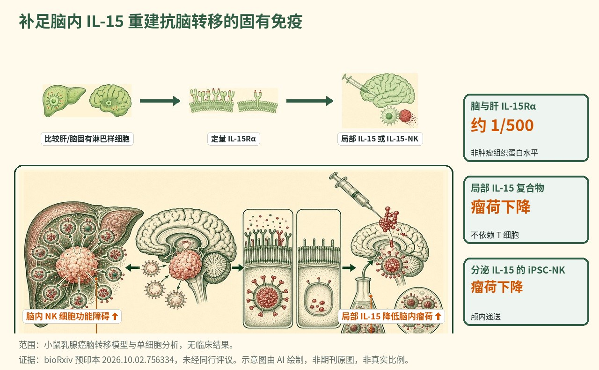

恢复脑内 IL-15 信号可解锁针对脑转移的固有淋巴样细胞免疫
在乳腺癌脑转移模型中，第 1 组固有淋巴样细胞严重功能障碍、无法控瘤，作者将其归因于 IL-15 的严重受限：脑内 IL-15Rα 蛋白约为肝脏的 1/500；局部 IL-15 复合物可在不依赖 T 细胞的情况下恢复固有细胞的聚集、细胞毒性与驻留并降低转移负荷，颅内分泌 IL-15 的 iPSC-NK 细胞同样降低瘤荷。

- 第 1 组固有淋巴样细胞在肝中多样且有效，但在脑转移中功能障碍
- 脑内 IL-15Rα 蛋白约为肝脏的 1/500
- 局部 IL-15 复合物在不依赖 T 细胞的情况下恢复固有细胞杀伤并降低转移负荷
- 颅内分泌 IL-15 的 iPSC-NK 细胞同样降低瘤荷
示意图概括了 IL-15 可得性的严重受限如何使第 1 组固有淋巴样细胞在乳腺癌脑转移中功能障碍，以及局部 IL-15 复合物或分泌 IL-15 的 iPSC-NK 细胞如何在不依赖 T 细胞的情况下恢复固有杀伤并降低瘤荷。
背景与未决问题
脑转移是乳腺癌常见且常致命的并发症，脑长期以来被视为一个免疫上独特的部位，系统性免疫疗法在此常表现不佳。自然杀伤（NK）细胞与 1 型固有淋巴样细胞（ILC1），合称第 1 组固有淋巴样细胞，是快速、不依赖抗原的杀伤者，在多个器官中参与控制转移性疾病。这些固有效应细胞能否控制脑内肿瘤、若不能又是为何，一直缺乏明确定义。
转移领域一个反复出现的谜题是：同样的癌细胞在一个器官中可被高效控制，却在另一个器官中肆意生长。肝脏与脑构成鲜明对比：肝脏富含多样的固有淋巴样群体，而脑实质中这类细胞相对稀少，并受一个特化微环境塑造。作者提出的未决问题是：第 1 组固有淋巴样细胞在脑转移中究竟是缺席或数量不足，还是虽然在场却被某种局部因素功能性地禁用；若是后者，这种局部缺陷能否被纠正以重新唤醒固有抗肿瘤免疫。
研究设计
作者将单细胞 RNA 测序与功能耗竭模型相结合，剖析乳腺癌脑转移（BCBM）中的第 1 组固有淋巴样细胞，并与肝脏转移中的同类细胞直接比较。单细胞测序表征每种组织中固有细胞的多样性与转录状态，而抗体介导的耗竭检验这些细胞在各部位是否确实为抑制肿瘤生长所必需。双重免疫组化用于定量脑与肝中的 IL-15Rα 蛋白，以探查各环境中固有细胞可获得的细胞因子支持。
在治疗方面，团队追求两条互补策略，以在发现其缺乏之处恢复 IL-15 信号。首先，他们在局部给予 IL-15 复合物，检验补充该细胞因子能否挽救固有细胞的数量与功能并降低瘤荷。其次，为迈向可转化的模式，他们颅内递送分泌 IL-15 的 iPSC 来源 NK 细胞；该平台已在非小细胞肺癌中进入临床测试。实验设计旨在分离固有细胞的贡献，包括证明 IL-15 复合物的获益不依赖 T 细胞。各组动物数量与给药细节在预印本全文中有载，但现有摘要未予涵盖。
关键结果
固有淋巴样细胞在肝中胜任、在脑中被禁用
单细胞测序揭示了鲜明的组织对比。在肝脏中，多样且功能完备的第 1 组固有淋巴样细胞群体与良好的转移控制相关。在乳腺癌脑转移中，同类细胞多样性有限、表现出严重的组织特异性功能障碍。其功能后果由耗竭实验直接证明：在脑内去除第 1 组固有淋巴样细胞对瘤荷没有影响，尽管这些细胞对脑实质有一定程度的浸润。换言之，细胞在场却未对控瘤作出贡献，是一种被禁用而非仅仅缺席的表型。这一区别在治疗上意义重大：一个被禁用但物理在场的细胞原则上可就地被重新激活，而缺席的细胞则须先被招募或补充。
脑内约 500 倍的 IL-15 缺口
为解释该功能障碍，作者转向 IL-15——一种对 NK 与 ILC1 细胞发育、存活与效应功能至关重要、通常以与 IL-15Rα 结合的形式呈递的细胞因子。通过双重免疫组化定量 IL-15Rα 蛋白，他们发现其在脑内的浓度约为肝脏的 1/500。这一显著的局部缺口为固有淋巴样细胞抵达脑后无法有效应答提供了机制性候选解释：它们被剥夺了维持其杀伤程序的细胞因子支持。相邻细胞上 IL-15Rα 对 IL-15 的反式呈递，是 NK 与 ILC1 细胞获得存活与活化信号的核心方式之一，因此该呈递受体的缺乏预计会同时钝化它们的存续与细胞毒性输出。
局部 IL-15 在不依赖 T 细胞的情况下恢复杀伤并降低瘤荷
在局部补充 IL-15 逆转了功能障碍。给予 IL-15 复合物可恢复第 1 组固有淋巴样细胞的聚集、细胞毒性与组织驻留，并显著降低脑转移负荷。重要的是，该获益不依赖 T 细胞，从而将效应限定于固有区室，并论证重新唤醒固有杀伤者足以改善对脑转移的控制。
一条可转化的细胞治疗路径
最后，团队测试了一种更接近临床的模式。颅内递送分泌 IL-15 的 iPSC 来源 NK 细胞——该平台已在非小细胞肺癌中进入临床测试——在该模型中显著降低瘤荷。这把机制洞见（脑使固有细胞缺乏 IL-15）与一种既提供效应细胞又自带 IL-15 支持的递送策略相耦合，指向一条原则上可转化的路径。
机制解读
论文所证实的： 乳腺癌脑转移中的第 1 组固有淋巴样细胞是功能障碍而非仅仅稀少，耗竭它们不改变肿瘤生长。该功能障碍与脑内 IL-15Rα 蛋白约为肝脏 1/500 的水平相吻合。在局部恢复 IL-15——无论是作为复合物还是通过分泌 IL-15 的 iPSC-NK 细胞——可重建固有细胞的聚集、细胞毒性与驻留并降低转移负荷，且对 IL-15 复合物而言这不依赖 T 细胞。
作者假设： 作者认为，组织特异性的细胞因子可得性差异塑造了第 1 组固有淋巴样细胞的多样性与控病能力。他们提出脑内严重的 IL-15 缺口是针对颅内肿瘤固有免疫失败的主要原因，并将局部 IL-15 信号定位为解锁针对脑转移乃至其他颅内恶性肿瘤的固有免疫的有力策略。
局限与不确定性
- 这是一篇 bioRxiv 预印本，未经同行评审；结论及任何数值在修订后可能改变。
- 数据来自乳腺癌脑转移的小鼠模型与组织切片；人脑转移中的 IL-15 阈值与治疗窗口仍待确立。
- 各组动物数量、定量的瘤荷下降、给药与随访在现有摘要中未说明。
- 系统性 IL-15 可能带来毒性，患者中反复颅内给药的可行性、安全性与持久性在此未涉及；所引用的 iPSC-NK 临床测试处于另一种疾病（非小细胞肺癌）。
临床与产业意义
该研究重构了一个棘手的临床问题：脑并非单纯缺乏固有免疫细胞，而似乎通过扣留 IL-15 主动禁用抵达的细胞。这把治疗靶点从招募细胞转向恢复其局部细胞因子支持。文中提出两条路径。局部 IL-15 复合物原则上可用于重新唤醒内源固有效应细胞，而分泌 IL-15 的 iPSC-NK 细胞提供一种现货式细胞产品，可在一次给药中同时把效应细胞及其细胞因子支持递送到所需之处。由于所引用的 iPSC-NK 平台已在非小细胞肺癌中进入临床测试，存在一条可信的转化路径，不过脑转移需要其自身的试验。其直接贡献是机制性与临床前的：确立了一个可测量、约 500 倍的 IL-15 缺口作为脑转移固有免疫失败的驱动因素，并表明在局部纠正它可恢复固有抗肿瘤活性。对 IL-15 阈值、递送可行性与安全性的人体验证仍是关键的待解步骤。